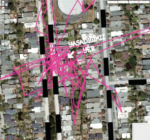
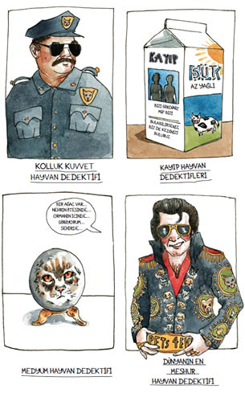

12
Haftalar geçti. Haritalar yavaş yavaş yeniden renklenmeye başladı. Pembe çizgiler daha geniş, daha kalın bir şekilde, EKG grafiği gibi inip çıkarak yeniden belirdi.
KABULLENME8

Pek bir heves göstermeden Wendy’ye, “Şimdi ne yapacağız?” diye sordum. Bu araştırmaya devam edecek miydik? Fibby’nin ölümüyle içimizden bir şeyler eksilmişti.
Öte yandan dikkatimi, kalbime kurşun gibi çökmüş ağırlıktan başka tarafa yönlendirecek bir şeye ihtiyacım vardı.
Wendy, “Belki bir hayvan dedektifi buluruz,” dedi. “Jim Carrey gibi.”
Ciddi olamaz, diye düşündüm. Hayvan dedektifi mi? Öyle bir şey yoktu ki. Ama internete girdim ve ne görsem beğenirsiniz, trilyonlarca hayvan dedektifi vardı.
Amerika’nın En Tanınmış Hayvan Dedektifi. Medyum Elektra, Hayvan Dedektifi. Kolluk Kuvvetleri Hayvan Dedektifi. Birleşik Devletler’in En İyi Kayıp Hayvan Dedektifi. Sanki dedektifler ortadan kaybolmuş gibi, talihsiz bir şekilde Kayıp Hayvan Dedektifleri ismini taşıyan bir grup bile vardı.
İnternetteki araştırmamı hevesle derinleştirdim. Hayvan dedektifleri konusunda bulduğum şeylerin bazıları şunlar:

FBI profil çıkarma tekniği nedir? Bu soruyu, duyuötesi algılama yeteneklerine rağmen geleneksel araştırma yöntemlerini de kullanan medyum bir hayvan dedektifine telefonda yönelttim. “Hayvanınızın kişiliği hakkızda zorular zoruyoruz, tıpkı polizlerin zuçluları ararken yaptığı gibi,” dedi. Ne olduğu anlaşılamayan aksanı gerçek de olabilirdi, sahte de.
“Yani kedi profili veritabanı mı var?” diye eşeledim.
“Hayır, hayır, tecrübelerimizi kullanıyoruz,” diye cevap verdi kadın. “Mezela zize geçmişte kedinizin kaybolduğunu zöyleyebilirim. Evin yolunu bulamamış. Kediler böyledir.”
“Kaybolmuşa benzemiyordu. Eve döndüğünde şişman ve mutluydu. Hâlâ oraya gidiyor gibi.”
“Evvet, evvet,” diye ısrar etti. “Çok kayıpmış.”
Başka bir hayvan dedektifine bir e-posta gönderip durumu açıkladım ve yardımını istedim. Kedi! Yaralanma! Kedi kayboldu! Umutsuzluk. Kedi döndü! Kedi takibi! Yardım? Hayvan dedektifi durumun tatsızlığını anlayamamış gibiydi. Kayıp kedim hakkında ekte gönderdiği formu doldurmamı ve para yollamamı istedi.
Yeniden açıklamaya giriştim. Kedim kayıp değildi, önceden kaybolmuştu. Ama hayvan dedektifi “önceden kaybolmuş” kelimeleri karşısında afallamıştı ya da belki isteğimi onaylamıyordu, ne de olsa bulacak gerçek kayıp kedileri vardı. İletişimi kestik.
Bir sonraki dedektif hiç cevap vermedi. Wendy, “Deli olduğunu düşünmüştür de ondan,” diye dalga geçti.
“Bir hayvan dedektifinin delilik konusunda söz hakkı olacağından pek emin değilim,” diye aksilendim.
Sonunda iz sürme köpekleri kullanan bir hayvan dedektifiyle temasa geçtim. Kadın, Tibby’nin eski kokusunun şimdiye kadar ortadan kalkmış olacağını söyledi. GPS cihazıyla devam edin, diye tavsiye etti. Tabii bunu gerçekten yapmak istiyorsanız.
Ben de topallayarak kütüphaneye gidip Özel Dedektifin Sırları, ya da, Nasıl Kendi Özel Dedektifiniz Olacaksınız isimli bir kitap ödünç aldım. Okudum, sonra da o ana kadar topladığım bilgileri kağıda döktüm:
Wendy listeme baktı. Bir süre sessiz kaldı. Sonunda, “Bunların hiçbiri kanıtlanmadı,” dedi.
“Buna mantıklı çıkarsama denir,” diye burnumu çektim, dedektif kitabını gösterdim.
Wendy eliyle göstererek, “Eh, özellikle de şu,” dedi. “Duyma menzilinin dışında, iki-muhtemelen-yirmi-sokak ötede bir yer. GPS, Tibby’nin yirmi sokak öteye gitmeye yaklaştığına dair bir şey bile göstermiyor.”
“ONU HER GECE ÇAĞIRDIM,” dedim sabırla. “Beni DUYSAYDI, eve gelirdi mutlaka. Yani, AĞLIYORDUM. Beni asla duymazdan gelmezdi, hele de beş hafta boyunca, üstelik AĞLARKEN. Bizim ON ÜÇ YILLIK bir ilişkimiz var. Yani. Dolayısıyla. Elbette.” Sanki sınıfta kalmış da bunu ona ben söylemeye mecbur olduğum için üzgünmüşüm gibi bir ifadeyle baktım Wendy’ye.
Wendy bu mantıklı akıl yürütmelerim karşısında bir an için etkilenmiş göründü.
Söylenenleri işitebilecek mesafedeki silahlı insanlara karşı kullanılan ses tonuyla, “Peki,” diye kabul etti nihayet. Sonra elini omzuma koydu, gözlerime büyük bir hassasiyetle bakarak, “Belki bu işi ben devralsam daha iyi olacak,” dedi.
8 Tibby yeniden harekete geçmişti.